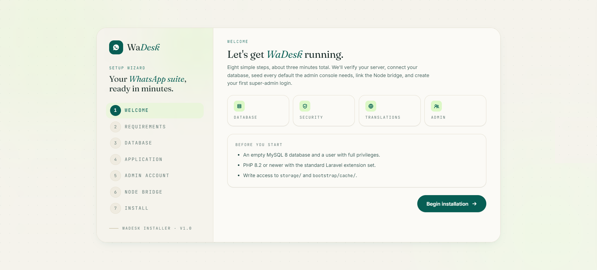
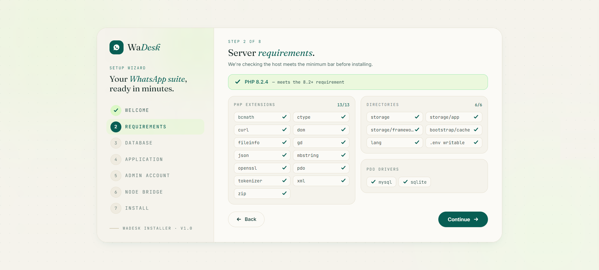
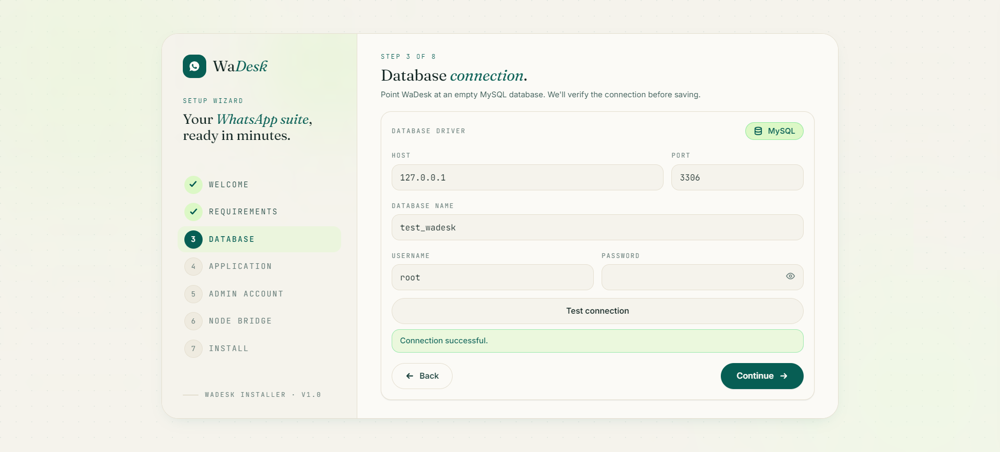
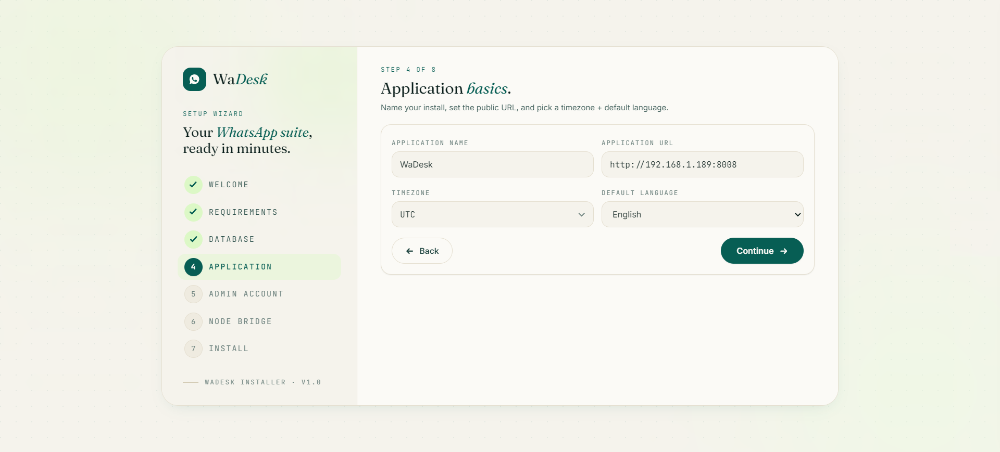
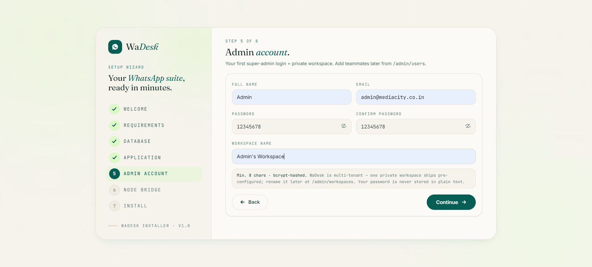
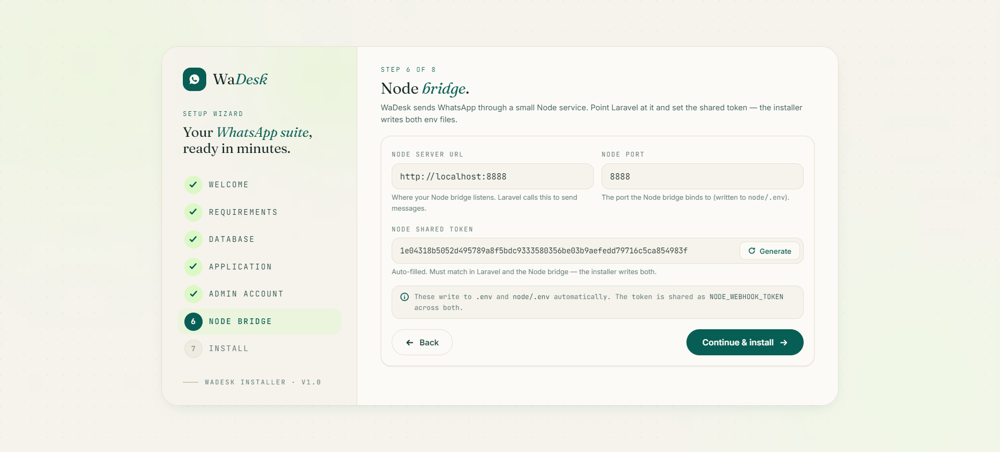
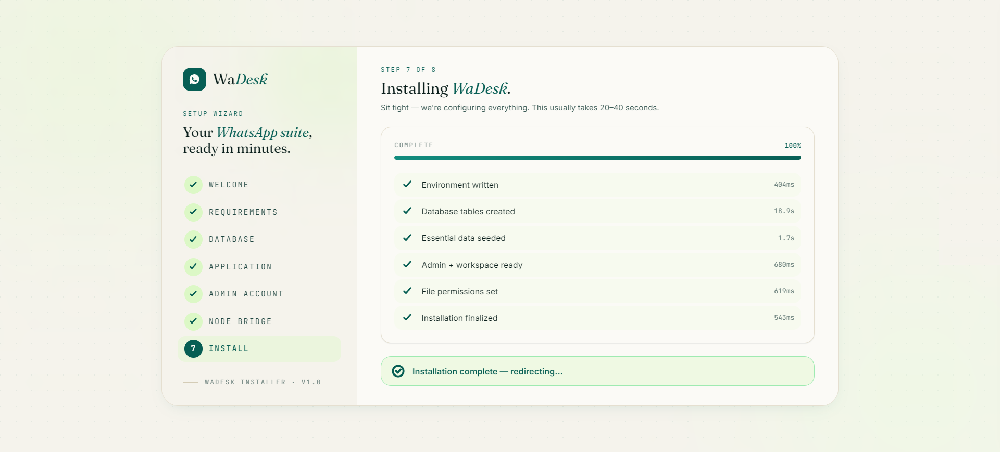

Web Installer Wizard
Video Walkthrough
Prefer to watch? This short video walks through the full installation step by step: https://youtu.be/bCqlGv_Xaeo
Overview
WaDesk ships with a built-in, browser-based install wizard. After you upload the files and create a database, just visit your domain — the first request is automatically redirected to /install, where a guided eight-step wizard sets everything up for you.
The wizard writes your configuration file, creates the database tables, loads the default data the admin console needs (roles, plans, currencies, payment gateways, the in-app guidebook), creates your first super-admin account with a private workspace, and finally locks itself so it can never be re-run on a live install.
No command line needed. The whole flow happens in the browser. The only prerequisite is that your server meets the Server Requirements and you have empty-database credentials ready.
Inside the Download
When you buy WaDesk on CodeCanyon you download a single package ZIP. Extract it and you get four folders — but only one of them is the app you install. Here is what each contains and whether a first-time install needs it:
| Folder | What's inside | Need it for a fresh install? |
|---|---|---|
| Database | A one-off database file used only for the manual v1.0.0 → v1.1.0 upgrade. | No. Brand-new installs skip this — it is only for existing v1.0.0 users upgrading to v1.1.0. |
| Documentation | The full HTML guide for the project (the pages you are reading now). Open its index.html in a browser to read it offline. | Reference only — do not upload it to your server. |
| Update | The version update ZIPs for the in-app updater (e.g. update_1.7.zip), used later to move an existing install to a newer release. | No — only when updating. See the Update Process. |
| WaDesk | The actual application — the Laravel app, the bundled node/ bridge, public/, and everything else that runs your site. This is what you install. | Yes — upload its contents (next section). |
Only theWaDeskfolder gets uploaded. The other three —Database,Documentation, andUpdate— stay on your computer. You never upload them to your web server for a fresh install.
Upload the App to Your Server
Open the WaDesk folder. Everything inside it — folders like app/, config/, public/, node/, storage/, and root files like artisan and composer.json — is the application. Upload the contents of the WaDesk folder (not the WaDesk folder itself) into your site's root folder (on most shared hosting that is public_html), using your hosting File Manager, FTP/SFTP, or SSH.
Your site runs atyourdomain.com/publicat first — that is normal. A Laravel app is served from itspublic/folder, so a fresh upload loads athttps://yourdomain.com/public. To serve it cleanly athttps://yourdomain.com(no/public), add the small.htaccessrewrite in RemovepublicFrom the URL below — that is the standard way to do it.
Set folder permissions
Make sure the web server can write to these two paths — the installer verifies them on its Requirements step (Step 2):
storage/and its subfoldersbootstrap/cache/
chmod -R 775 storage bootstrap/cache
On a VPS, also make the web-server user the owner (chown -R www-data:www-data storage bootstrap/cache). Full details are on the Server Requirements page.
Next: with the files uploaded and an empty database ready, visit your site in a browser. WaDesk detects it is not yet set up and redirects the first request to /install — the wizard below.
Before You Begin
Have these ready before you open the wizard:
- An empty MySQL 8 database plus a user with full privileges on it.
- Your site URL — the address WaDesk actually runs at, which the wizard saves as the application URL. On a fresh install this includes
/public; use the clean domain only once you have removed/public(see RemovepublicFrom the URL):- Main domain:
https://yourdomain.com/public - Subdomain:
https://app.yourdomain.com/public - Localhost (local test):
http://localhost/wadesk/public
- Main domain:
- The email and password you want for the first admin account.
- Write access to
storage/,bootstrap/cache/, and the project root (so the installer can write.env).
Then point your browser at your domain. A fresh install detects that it is not yet set up and redirects you straight to the Welcome screen.
Remove public From the URL
A Laravel app is served from its public/ folder, so a fresh install loads with /public in the address — for example https://yourdomain.com/public. This is normal. The standard way to serve the site cleanly at https://yourdomain.com is to create a .htaccess file in your project root folder (the folder where you uploaded the app, above public/) and add the following:
<IfModule mod_rewrite.c>
RewriteEngine On
RewriteRule ^(.*)$ public/$1 [L]
</IfModule>
This rewrites every request into public/, so your site opens at https://yourdomain.com without /public. It needs Apache or LiteSpeed with mod_rewrite enabled. After removing /public, make sure the application URL saved by the wizard (stored in .env as APP_URL) is the clean address without /public.
VPS alternative: instead of the.htaccessrewrite you can point the domain's document root directly at thepublic/folder — both give the same clean URL. See also the Installation FAQ.
Step 1 — Welcome

The opening screen introduces the process: "Eight simple steps, about three minutes total." It summarises what the wizard will do (verify the server, connect the database, seed defaults, create your admin login) and shows a short pre-flight checklist:
- An empty MySQL 8 database and a user with full privileges.
- PHP 8.2 or newer with the standard Laravel extension set.
- Write access to
storage/andbootstrap/cache/.
Click Begin installation to continue.
Step 2 — Requirements

The wizard runs a live environment check against the host. You will see:
- A PHP version banner — green if you are on 8.2+, red if not.
- A PHP extensions grid with a tick or cross for each required extension (with an
n/totalcounter). - A Directories panel confirming each writable path (
storage,storage/app,storage/framework,bootstrap/cache,lang, and.envwritability). - A PDO drivers panel that must list
mysql.
The Continue button is only enabled when every item passes. If something is marked in coral (red), fix it on the server, then reload the page — the check re-runs automatically. When everything is green, click Continue.
Most common blocker: a missinggdorzipextension, or a non-writable.env. Enable the extension in your PHP settings or fix folder permissions, then refresh. See Troubleshooting for the exact fixes, or the Installation FAQ for the ZipArchive and curl_init extension errors.
Step 3 — Database Connection

Creating the Database
Before you fill in this step you need an empty MySQL database and a user with full privileges on it. Create them in your hosting control panel first, then enter the details in the wizard. Pick your panel below:
cPanel → MySQL® Databases
- Open MySQL® Databases (under the "Databases" section).
- Under Create New Database, type a name such as
wadeskand click Create Database. cPanel adds your account prefix, so the real name becomes something likeuseracc_wadesk. - Under MySQL Users → Add New User, create a user with a strong password (the full name will look like
useracc_wauser). - Under Add User To Database, select the user and the database, click Add, tick ALL PRIVILEGES, then Make Changes.
In the wizard use Host localhost, Port 3306, and the full prefixed database name and username.
Hostinger → hPanel Databases
- Open hPanel → Databases → Management (MySQL Databases).
- Under Create a New MySQL Database, enter a database name and a username, and set a strong password. Hostinger adds an account prefix, so the real names look like
u123456789_wadeskandu123456789_wauser. - Click Create. Hostinger automatically grants the new user full privileges on that database.
In the wizard use Host localhost, Port 3306, and the full prefixed database name and username. If localhost fails, Hostinger also shows a specific MySQL host on the same page — use that instead.
Plesk → Databases
- Go to Websites & Domains → Databases and click Add Database.
- Enter a database name such as
wadeskand keep it related to your domain. - In the same dialog, under Users, add a database user with a strong password and leave access set to all tables.
- Click OK. Plesk then shows the database name, user, and host together.
In the wizard use the host Plesk shows (usually localhost), Port 3306, and the database name and user you just created.
aaPanel → Databases
- Open the Databases menu and click Add database.
- Enter a database name such as
wadesk; aaPanel auto-creates a matching user and lets you set the password. - Set Access permission to Everyone (or your server's IP), choose the utf8mb4 character set if asked, then click Submit.
In the wizard use Host 127.0.0.1, Port 3306, and the database name, user, and password you set.
phpMyAdmin — bundled with most panels, and with Laragon / XAMPP locally.
- Open phpMyAdmin and click the Databases tab.
- Under Create database, type a name such as
wadesk, choose collation utf8mb4_general_ci, and click Create. - Optional: create a dedicated user under User accounts → Add user account, set a password, tick Grant all privileges on database "wadesk", and save. On a local machine you can simply use the built-in
rootuser.
In the wizard use Host 127.0.0.1, Port 3306, the database name, and the user and password (locally this is often root with an empty or default password).
Leave the database empty. Create the database and user only — do not add any tables. The wizard builds every table for you on the Installing step. Keep the name, user, and password handy for the fields below.
Point WaDesk at your empty database. MySQL is the only supported driver (shown as a fixed badge). Fill in:
| Field | What to enter | Typical value |
|---|---|---|
| Host | Database server address | 127.0.0.1 or localhost |
| Port | MySQL port | 3306 |
| Database name | Your empty database | wadesk |
| Username | Database user | your DB user |
| Password | That user's password | (your password) |
Click Test connection first. The wizard opens a live PDO connection and shows a green "Connection successful" message, or a red error with the exact reason if it fails. Once the test passes, click Continue — your details are held in the install session (not yet written to disk).
Tip: If the test fails, the most common causes are a wrong host (use127.0.0.1instead oflocalhoston some hosts), a user without privileges on that database, or the database not existing yet. If you see a "Could not find driver" error, see the Installation FAQ.
Step 4 — Application Basics

Name your install and set its public identity:
| Field | Purpose |
|---|---|
| Application name | Shown across the app and in branding (you can rename it later in the admin panel). Defaults to "WaDesk". |
| Application URL | Your full public URL, e.g. https://app.example.com. Used to build links, webhooks, and redirects — get this right. |
| Timezone | Searchable list of all timezones; sets the default for scheduling and timestamps. |
| Default language | The starting interface language (English, Spanish, Hindi, Arabic, and many more are bundled). |
Click Continue. These values are saved into your configuration during the install run.
Step 5 — Admin Account

Create your first super-admin login and its private workspace:
- Full name — the admin's display name.
- Email — your login email (also where password recovery would go once SMTP is configured).
- Password and Confirm password — minimum 8 characters; stored securely (hashed, never in plain text).
- Workspace name — WaDesk is multi-tenant, so your admin account ships with one private workspace pre-configured. You can rename it later from the admin panel.
Click Create admin & install to move to the install run.
Save your password now. The wizard never displays it again and does not keep it in the session beyond this step. Email recovery requires SMTP, which is configured later — so store the credentials in a password manager immediately.
Step 6 — Node Bridge

This step wires WaDesk to its Node helper service — the Node.js bridge that carries sending and scheduling for every engine (Unofficial API, WhatsApp Cloud API, and Twilio), not just the Unofficial API. The installer wires it for you: nothing has to be matched up by hand afterwards — the wizard writes both environment files and uses the same shared secret on each side, so the two halves can always talk to each other. Fill in three fields:
| Field | What to enter | Typical value |
|---|---|---|
| Node server URL | Where the Node bridge listens. WaDesk sends messages to this address. | http://localhost:8888 |
| Shared token | The secret WaDesk and the bridge use to authenticate each other. Auto-generated — leave it as is, or paste your own. | (pre-filled) |
| Port | The port the Node bridge listens on. | 8888 |
When you continue, the installer writes the configuration to both sides automatically:
- Into WaDesk's Laravel
.env:SERVER_URL(the Node server URL),NODE_WEBHOOK_TOKEN(the shared token), andAPP_URL. - Into the bridge's own
node/.env(which lives inside the app folder):PORT,APP_DOMAIN_NAME(your app URL), and the sameNODE_WEBHOOK_TOKEN.
Because the installer writes the identical token to both files, the shared secret matches by construction — there is no manual copy-paste step and nothing to keep in sync.
It's all wired for you. You no longer edit any .env by hand, set a CORS allowed-origins list, or paste the server URL into the browser extension. The installer handles the Node bridge environment, the shared secret, and the extension URL automatically.
Running the Node Bridge on cPanel
On a cPanel host you do not start the bridge from a terminal — cPanel runs and supervises it for you through its Setup Node.js App tool. The app ships with a cPanel-specific entry point, so the only work is pointing cPanel at the right folder and swapping in that file.
- In cPanel, open Setup Node.js App and click Create Application.
- Set the Application Root to your
domain/nodedirectory — the folder that contains the Node files. - Set the Application URL to your domain and enter
nodeas the URL path (for examplehttps://yourdomain.com/node). - Set the Application Startup File to
app.cjs. This file is already included in thenodefolder — you do not need to create it. - Inside the
nodefolder, rename the existingindex.jstoindex-old.js. - Rename
index-cpanel.jstoindex.js. - Save, then Restart the application from cPanel.
Why the file swap?index.jsis written for a normal server where you start the process yourself.index-cpanel.jsis the same bridge adapted to how cPanel's Passenger runtime loads an app. Keeping the original asindex-old.jsmeans you can swap back if you later move off cPanel.
Repeat this after every update. An update ships a fresh index.js, which overwrites your renamed file — so after applying an update on cPanel, redo steps 5 and 6 and restart the application, or the bridge will not come back up.
Step 7 — Installing

This screen runs the actual installation as a sequence of six sub-steps, each shown with a live progress bar and timing. The wizard runs them one at a time so that if any sub-step fails, you can fix the cause and retry from exactly that point — without losing earlier work.
- Configuration written — saves your settings, generates the app encryption key, and creates the shared secret the Node helper service uses to talk to WaDesk.
- Database tables created.
- Essential data loaded — roles & permissions, subscription plans, currencies, payment gateways, translation providers, checkout defaults, and the in-app guidebook.
- Admin + workspace ready — creates your super-admin user and their private workspace, with you as the owner.
- File permissions set — links public storage and creates the call-recordings folder.
- Installation finalized — clears caches and writes the
storage/installedmarker that locks the wizard.
The whole run usually takes 20–40 seconds. If a step fails, the wizard pauses and shows the error plus a Retry from failed step button. On success it shows "Installation complete" and takes you to the final screen automatically.
Safe to retry: Each data-loading step can be re-run safely, so retrying a failed install will not create duplicate plans, roles, or gateways.
Hit an error? Common install-time errors — a 419 page-expired, "Could not find driver", "Class 'ZipArchive' not found", "No application encryption key", or a hidden .env — are covered in the Installation FAQ and on the Troubleshooting page.
Step 8 — Start the Node Helper Service
The wizard configured the Node service, but it does not start it. You start it once and keep it running. This is required on every channel — the Node bridge carries the send path and runs the scheduler for the Unofficial API, the WhatsApp Cloud API (WABA), and Twilio alike. If it is not running, nothing sends and broadcasts / campaigns / scheduled messages pause. See Do I need Node.js even if I only use the official engines?
Keep it alive. Run the bridge under a process manager (PM2, systemd, Supervisor, or your panel's Node app manager) so it restarts automatically after a crash or a server reboot. A one-off node index.js stops the moment you close the terminal.
VPS / dedicated server (SSH) — recommended
From the app folder, install the bridge's dependencies once, then run it under PM2 so it auto-restarts and survives reboots:
cd node
npm install # one time: install the bridge's dependencies
npm install -g pm2 # a keep-alive process manager
pm2 start index.js --name wadesk-bridge
pm2 save
pm2 startup # run the line it prints, so it auto-starts on rebootCheck it is running with pm2 status and view logs with pm2 logs wadesk-bridge. A systemd service or a Supervisor program running node index.js from the node/ directory works equally well.
cPanel — Setup Node.js App
No SSH needed — cPanel manages the process (Passenger/PM2) for you:
- cPanel → Setup Node.js App → Create Application.
- Node.js version: 18 or newer.
- Application mode: Production.
- Application root: the app's
nodefolder (e.g.wadesk/node). - Application startup file:
index.js. - Click Create, then Run NPM Install, then Start App (or Restart).
Match the port & URL. Whatever port cPanel assigns the Node app, that URL must equal the Node server URL from Step 6 (Admin → Settings → Providers). Leave the app Started — if you stop it, sending stops.
Plesk — Node.js extension
- Install the Node.js extension (Plesk → Extensions) if it isn't already.
- Open your domain → Node.js.
- Set Node.js version to 18+, Application Root to the
nodefolder, and Application Startup File toindex.js. - Click NPM Install, then Enable Node.js (or Restart App).
Windows / other hosts
Run node index.js from the node/ folder under a service wrapper (e.g. NSSM on Windows, or systemd on Linux) so it starts on boot and restarts on crash.
No Node.js on your host? Then WaDesk cannot send on any channel. Move to a host that offers Node.js, or run the node/ service on a small separate server and set its public URL as the Node server URL in Admin → Settings → Providers.